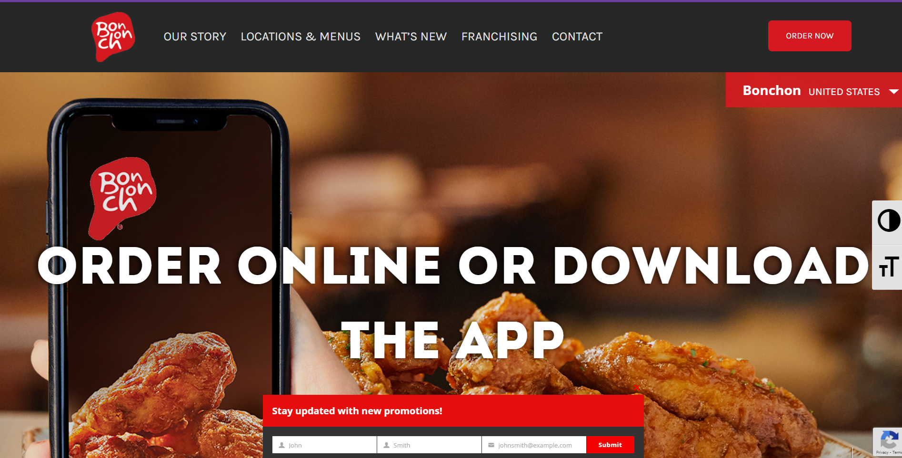

Delicious Restaurant Website Critiques
Bonchon
Bonchon has a a good design and color scheme of three colors, such as red, white, and black. The colors make the website not too overboard. The fonts are big to read easier and is placed very orderly.
Popeyes

Popeyes’s website has bright visuals with colors though its content. The page is very colorful and artsy looking making the food look very good. The border image on top of the website is clear and you can see the nice shine on the sandwhich, but as you scroll down the images doesn't look clear, somewhat very bright and not good quality.
Choongman Chicken

The Choongman Chicken restaurant doesn't have a strong strong visual identity of its content. The color scheme is too simple and how the website is set doesn't show much interest and fun concept, as you look at it, it's simple. The good part about it is that the menu is well organized with the listing of prices. It would be great if they post images of the foods for people to see who aren't familiar with the restaurant.
Kogiya

When first going on the website, The home's image shows you all of the side dishes you will get with your selection of meat, which is very helpful. The grid style is well-organized and easy to choose from when clicking on a selection. The color scheme is simple, but makes it nice looking. How they bold the words to show you what's required before you enter the restaurant is helpful in order for people to see the information, since it's important during this time to be safe.
Five Guys

The Five Guy's website is very artistic, nice, and definitely is organized well. The menu is simple and is sorted easy for people to know what foods they have in the restaurant. The bold fonts show the different type of category of foods they have and is showed with great listings of each food. The image is very fun and creative, as it's interesting of how the foods are lined up on the image, making each of the food item look so delicious.